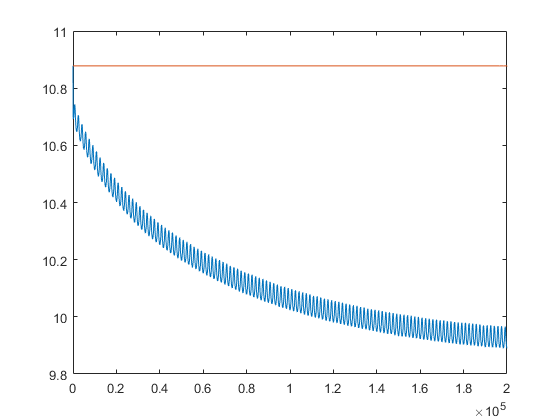

Low-latency finite duration acquisition
This example shows how to do low-latency finite duration acquisition using the (undocumented) MEX "projection layer" for NI-DAQmx driver, available in Data Acquisition Toolbox R2014b.
Contents
Requires attached MATLAB functions (wrappers for NI-DAQmx driver functions)
- NI_DAQmxCfgSampClkTiming.m
- NI_DAQmxGetReadNumChans.m
- NI_DAQmxStartTask.m
- NI_DAQmxStopTask.m
- NI_DAQmxReadAnalogF64.m
Session configuration
s = daq.createSession('ni'); aiCh(1) = s.addAnalogInputChannel('Dev7', 'ai0', 'Voltage'); aiCh(2) = s.addAnalogInputChannel('Dev7', 'ai1', 'Voltage'); aiCh(1).Range = [-10 10]; aiCh(2).Range = [-10 10]; % Set session rate and acquisition duration s.Rate = 1E+5; s.DurationInSeconds = 2; % TaskHandle property is available (undocumented) in MATLAB R2014b. % Assuming all analog input channels belong to the same NI-DAQmx task aiTaskHandle = aiCh(1).TaskHandle;
Finite duration acquisition
% Past this line, do not modify session configuration or properties, % and do not execute prepare(s), startForeground(s), startBackground(s) % Configure finite duration acquisition (rate, number of scans) NI_DAQmxCfgSampClkTiming(aiTaskHandle, s.Rate, s.NumberOfScans); tic % Perform a finite duration acquisition operation NI_DAQmxStartTask(aiTaskHandle); inputData = NI_DAQmxReadAnalogF64(aiTaskHandle, s.NumberOfScans, 10); NI_DAQmxStopTask(aiTaskHandle); toc
Elapsed time is 2.037846 seconds.
Process and display data
% If data grouped by channel in 1D array, reshape data array to 2D
numChannels = NI_DAQmxGetReadNumChans(aiTaskHandle);
inputData = reshape(inputData, [], numChannels);
figure;
plot(inputData);
 Clean up
delete(s)
clear s